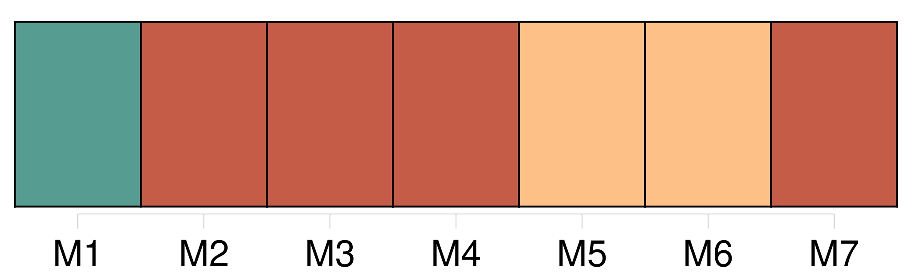

Longueur nb maillons : 32 mentions |
 |
Mais [Mme Grangier] paraissait l'aînée de [son] mari ; [son] inélégance, [sa] taille courte, firent qu' [elle] me déplut au premier coup d'œil. Au cours de cette promenade, je devais remarquer qu' [elle] fronçait souvent les sourcils, ce qui couvrait [son] front de rides auxquelles il fallait une minute pour disparaître. Afin qu' [elle] eût tous les motifs de me déplaire, sans que je me reprochasse d'être injuste, je souhaitais qu' [elle] employât des façons de parler assez communes.
Sur ce point, [elle] me déçut. [3 phrases] Elle devait venir par le prochain train, « dans un quart d'heure, expliqua [Mme Grangier] , n'ayant pu être prête à temps. [2 phrases] « Attends bien que le train s'arrête », lui cria [sa mère] …… [13 phrases] — Vous ressemblez peu à [madame votre mère] , lui dis -je. [1 phrases]
— On me le dit quelquefois ; mais, quand vous viendrez à la maison, je vous montrerai des photographies de [maman] lorsqu' [elle] était jeune, je [lui] ressemble beaucoup.
Je fus attristé de cette réponse, et je priai Dieu de ne point voir Marthe quand elle aurait l'âge de [sa mère]
Voulant dissiper le malaise de cette réponse pénible, et ne comprenant pas que, pénible, elle ne pouvait l'être que pour moi, puisque heureusement Marthe ne voyait point [sa mère] avec mes yeux, je lui dis : [2 phrases] — Vous pourrez le demander à [maman] ( comme si elle avait besoin de se justifier!! [40 phrases] Je dus subir les compliments de [Mme Grangier] [1 phrases] Ils rappelaient à [sa] fille que je n'étais encore qu'un lycéen, qui passerait son baccalauréat dans un an. [12 phrases]
dit, fronçant les sourcils, [sa mère] [qu'] un tel manque de soumission choquait toujours. [18 phrases]
Presque aussitôt, [Mme Grangier] parut dans la petite pièce où l'on m'avait introduit. [1 phrases]
Rougissant, je priai [Mme Grangier] de m'excuser de [la] déranger à pareille heure, comme s'il eût été une heure du matin : ne pouvant venir jeudi, j'apportais le livre et les journaux à [sa] fille. — Cela tombe à merveille, me dit [Mme Grangier] , car Marthe n'aurait pu vous recevoir. [9 phrases]
Je pensai à [sa mère] [48 phrases] Mais [sa mère] voulait à toute force la suivre. Marthe, enfin, en [lui] promettant de ne pas faire de folies, avait obtenu de venir seule. [242 phrases] Dans mon délire, je la mordais aux endroits où sa peau était nue, pour que [sa mère] la soupçonnât d'avoir un amant. |
|
Il est possible de télécharger la ressource sur la page Ortolang |
Si vous avez des questions ou vous voyez des erreurs, merci d'envoyer un mail à silvia.federzoni89@gmail.com |